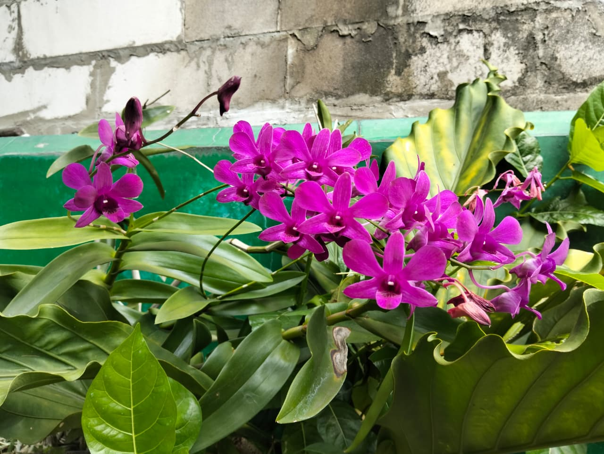
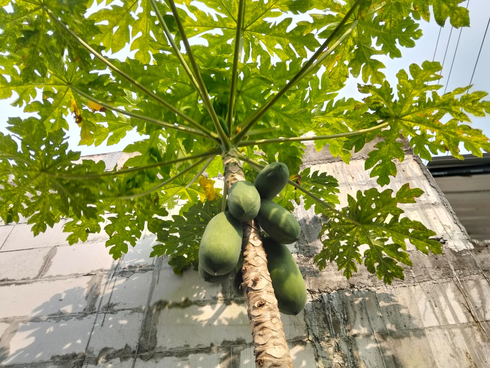
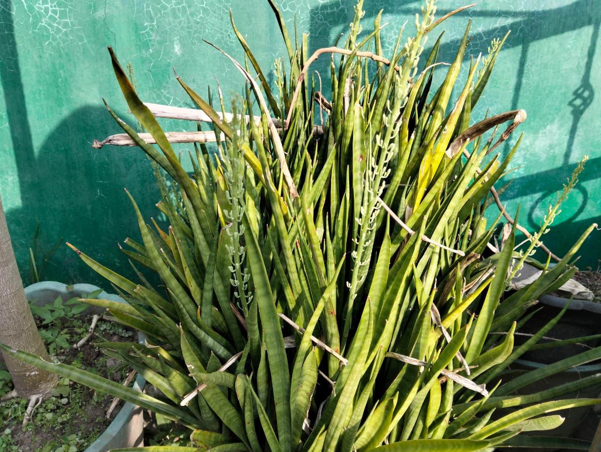

Blog TanamKita
Tips merawat, inspirasi dekorasi, dan info terkini

TIPS•12 DES 2025
Cara Merawat Anggrek Agar Rajin Berbunga
Anggrek memang cantik, tapi seringkali susah berbunga kembali. Simak rahasia perawatannya di sini.

PANDUAN•10 DES 2025
Cara Mudah Menanam Pepaya di Pot
Tidak punya lahan luas? Jangan khawatir! Pepaya juga bisa tumbuh subur dan berbuah lebat di dalam pot.

REKOMENDASI•08 DES 2025
Manfaat Lidah Mertua sebagai Pembersih Udara Alami
Tanaman ini tidak hanya estetik, tapi juga ampuh menyerap racun berbahaya di dalam ruangan Anda.